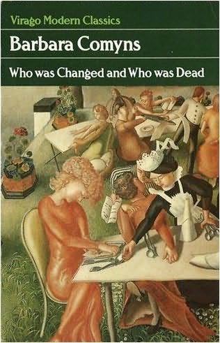

Wednesday, July the 28th, 2010
back to: title, date or indexes

Nige has a postage about Barbara Comyns, which served to remind me that Who Was Changed And Who Was Dead (1954) is one of my favourite novels, and without any doubt the finest book in the popular outbreak-of-ergot-poisoning genre. I have not reread it for years, so have removed it from the shelves in readiness.
Those who like to delve into such things may wish to know that I consider it an important influence on my own scribblings. How could it not be, when, leafing through it just now I note sentences such as:
There was a great smell of mud, and it was the first of June.
We always have cocoa after a thunderstorm.
The village bachelor, drink-sodden Lumber Splinterbones, usually ambled along to Grandmother Willoweed's birthday party.
Dennis was frightened of cows
and there should now be a question mark to end this sentence on a grammatically sound footing, thus… ?